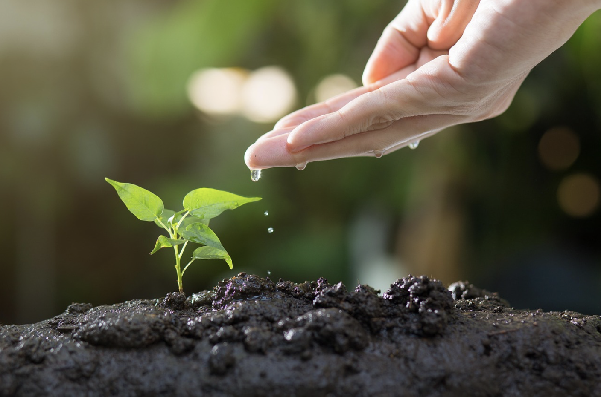

Welcome
Learn how to grow your own plants with simple guides and tools.
Loading plants...

Gardening doesn't need to be complicated. This site helps beginners learn what to plant, when to plant it, and how to keep plants healthy—step by step. Learn what to grow, when to plant, and how to maintain healthy plants through simple, practical instructions.
Start Your Gardening Journey Today
Everything you need to go from beginner to confident gardener.
- Learn the basics of planting and soil preparation.
- Discover what grows best in your space and season.
- Understand watering, sunlight, and plant care.
- Access simple tools and guides without confusion.